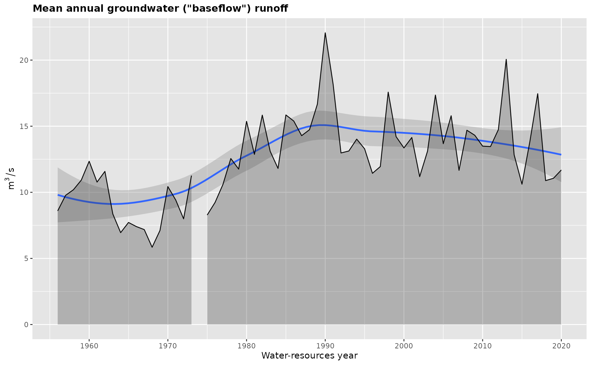

Example data
Throughout grwat package documentation a sample dataset spas containing the daily runoff data for Spas-Zagorye gauge on Protva river in Central European plane is used. The dataset is supplemented by meteorological variables (temperature and precipitation) obtained from CIRES-DOE (1880-1949) and ERA5 (1950-2021) data averaged inside gauge’s basin:
library(grwat)
library(dplyr)
library(ggplot2)
library(lubridate)
data(spas)
head(spas)
#> # A tibble: 6 × 4
#> Date Q Temp Prec
#> <date> <dbl> <dbl> <dbl>
#> 1 1956-01-01 5.18 -6.46 0.453
#> 2 1956-01-02 5.18 -11.4 0.825
#> 3 1956-01-03 5.44 -10.7 0.26
#> 4 1956-01-04 5.44 -8.05 0.397
#> 5 1956-01-05 5.44 -11.7 0.102
#> 6 1956-01-06 5.58 -20.1 0.032This 4-column representation is standard for advanced separation discussed below.
Baseflow filtering
For more information on baseflow filtering, read the Baseflow filtering vignette.
grwat implements several methods for baseflow filtering, including those by Lyne-Hollick, Boughton, Chapman, Jakeman and Maxwell. The get_baseflow() function does the job:
Qbase = gr_baseflow(spas$Q, method = 'lynehollick', a = 0.925, passes = 3)
head(Qbase)
#> [1] 3.698598 3.789843 3.876099 3.958334 4.037031 4.112454Though get_baseflow() needs just a vector of runoff values, it can be applied in a traditional tidyverse pipeline like follows:
# Calculate baseflow using Jakeman approach
hdata = spas %>%
mutate(Qbase = gr_baseflow(Q, method = 'jakeman',
a = 0.925, passes = 3))
# Visualize for 2020 year
ggplot(hdata) +
geom_area(aes(Date, Q), fill = 'steelblue', color = 'black') +
geom_area(aes(Date, Qbase), fill = 'orangered', color = 'black') +
scale_x_date(limits = c(ymd(19800101), ymd(19801231)))
#> Warning: Removed 23376 rows containing missing values (position_stack).
#> Removed 23376 rows containing missing values (position_stack).Advanced separation
For more information on advanced separation, read the Advanced separation vignette.
Advanced separation by gr_separate() implements the method by (Rets et al. 2022), which involves additional data on temperatures and precipitation to detect and classify flood events into the rain, thaw and spring (seasonal thaw). Between these events \(100\%\) of the runoff is considered to be ground. Inside those events the ground flow is filtered either by one of the baseflow functions, or by Kudelin’s method, which degrades baseflow to \(0\) under the maximum runoff value during the year. The method is controlled by more than 20 parameters, which can be region-specific. Therefore, to ease the management and distribution of these parameters, they are organized as list, as returned by gr_get_params():
sep = gr_separate(spas, params = gr_get_params(reg = 'Midplain'))
#> grwat: data frame is correct
#> grwat: parameters list and types are OK
head(sep)
#> # A tibble: 6 × 11
#> Date Q Qbase Quick Qseas Qrain Qthaw Type Year Temp Prec
#> <date> <dbl> <dbl> <dbl> <dbl> <dbl> <dbl> <int> <int> <dbl> <dbl>
#> 1 1956-01-01 5.18 NA NA NA NA NA NA NA -6.46 0.453
#> 2 1956-01-02 5.18 NA NA NA NA NA NA NA -11.4 0.825
#> 3 1956-01-03 5.44 NA NA NA NA NA NA NA -10.7 0.26
#> 4 1956-01-04 5.44 NA NA NA NA NA NA NA -8.05 0.397
#> 5 1956-01-05 5.44 NA NA NA NA NA NA NA -11.7 0.102
#> 6 1956-01-06 5.58 NA NA NA NA NA NA NA -20.1 0.032Resulting separation can be visualized by gr_plot_sep() function. In addition to classification of the flow, the function shows the dates of the spring seasonal flood:
gr_plot_sep(sep, years = c(1978, 1989))Summarizing annual variables
For more information on annual variables, read the Annual variables vignette.
After hydrograph is separated, its characteristics can be summarized by gr_summarize() into annual variables which characterize the annual runoff, its components (ground, spring, rain and thaw) and low flow periods (summer and winter):
vars = gr_summarize(sep)
head(vars)
#> # A tibble: 6 × 57
#> Year Year1 Year2 datestart datepolend PolProd Qy Qmax datemax Qygr
#> <dbl> <dbl> <dbl> <date> <date> <int> <dbl> <dbl> <date> <dbl>
#> 1 1956 1956 1957 1956-04-11 1956-05-05 24 18.4 467 1956-04-22 8.45
#> 2 1957 1957 1958 1957-03-27 1957-05-22 56 20.3 460 1957-04-08 9.33
#> 3 1958 1958 1959 1958-04-03 1958-05-31 58 27.4 537 1958-04-21 9.90
#> 4 1959 1959 1960 1959-03-27 1959-04-27 31 27.1 406 1959-04-16 10.6
#> 5 1960 1960 1961 1960-03-26 1960-04-26 31 29.4 406 1960-04-15 12.0
#> 6 1961 1961 1962 1961-03-10 1961-05-08 59 18.8 296 1961-04-10 10.5
#> # … with 47 more variables: Qmmsummer <dbl>, monmmsummer <date>, Qmmwin <dbl>,
#> # nommwin <date>, Q30s <dbl>, date30s1 <date>, date30s2 <date>, Q30w <dbl>,
#> # date30w1 <date>, date30w2 <date>, Q10s <dbl>, date10s1 <date>,
#> # date10s2 <date>, Q10w <dbl>, date10w1 <date>, date10w2 <date>, Q5s <dbl>,
#> # date5s1 <date>, date5s2 <date>, Q5w <dbl>, date5w1 <date>, date5w2 <date>,
#> # Wy <dbl>, Wgr <dbl>, Wpol2 <dbl>, Wpol1 <dbl>, Wpol3 <dbl>, Wpavs2 <dbl>,
#> # Wpavs1 <dbl>, Wpavthaw2 <dbl>, Wpavthaw1 <dbl>, WgrS <dbl>, WS <dbl>, …These characteristics can be plotted by gr_plot_vars():
gr_plot_vars(vars, Qygr)
#> Warning: Removed 2 rows containing non-finite values (stat_smooth).
gr_plot_vars(vars, date10w1, Wpol3, DaysThawWin, Qmaxpavs, tests = TRUE,
layout = matrix(1:4, nrow = 2, byrow = TRUE))
#> Warning: Removed 2 rows containing non-finite values (stat_smooth).
#> Warning: Removed 2 rows containing missing values (geom_point).
#> Warning: Removed 2 rows containing non-finite values (stat_smooth).
#> Removed 2 rows containing non-finite values (stat_smooth).
#> Warning: Removed 2 rows containing missing values (geom_rect).
#> Warning: Removed 2 rows containing non-finite values (stat_smooth).
Reporting
For more information on reporting, read the Reporting vignette.
Hydrograph separation and its annual variables can be aggregated into one information-rich graphical report that brings everything into one place. Just pass the results of gr_separate() and gr_summarize() into gr_report() function and provide the path to the ouput HTML file:
Additional features
grwat contains some useful functions that can ease your work with runoff data and make it more fun. In particular:
Missing data vignette describes how to find and interpolate the periods of missing runoff and meteorological data which may affect your analysis with
grwat.Meteo data vignette shows how to join temperature and precipitation data from daily reanalysis provided by
grwat. This can be useful if you do not have meteorological observations inside the basin.Fancy runoff plots vignette presents some fascinating graphical techniques which can be used to compare hydrographs for different years. These include matrix plots, horizon plots, ridgeline plots and hydrograph animations.
Rets, E. P., M. B. Kireeva, T. E. Samsonov, N. N. Ezerova, A. V. Gorbarenko, and N. L. Frolova. 2022. “Algorithm Grwat for Automated Hydrograph Separation by B.i. Kudelin’s Method: Problems and Perspectives.” Water Resources 49 (1): 23–37. https://doi.org/10.1134/S0097807822010146.